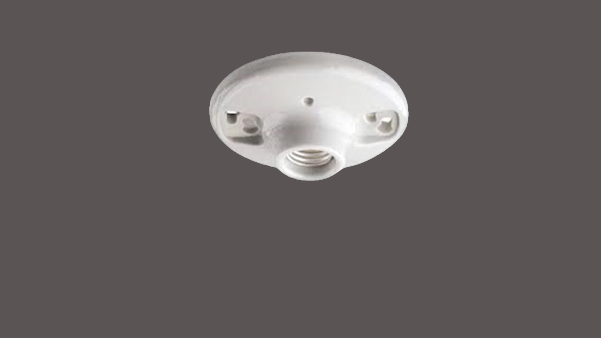
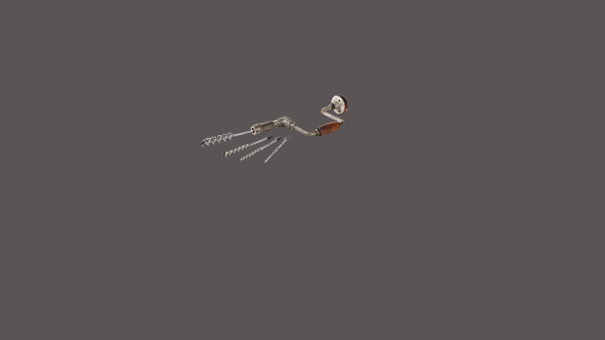
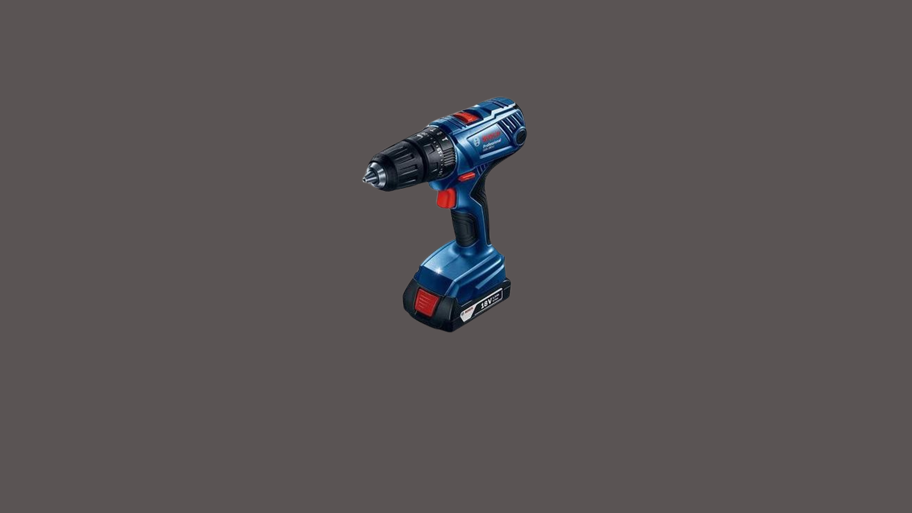
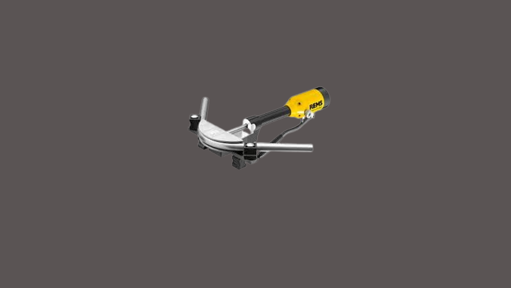
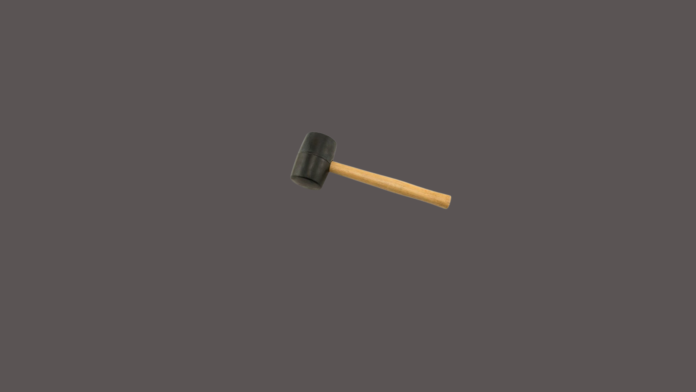
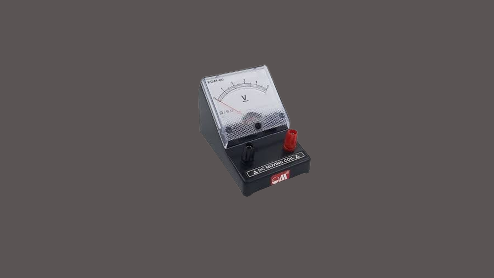

EIM E-LEARNING MODULE
Hummer
Phillips Screwdriver
Flat screw
Allen-Screwdriver
Lineman's Pliers
Long Nose
Side Cutting
Wire Scripper
Circuit Breaker
Switch
Flush type

Surface type

Overall, the purpose of a lamp holder is to facilitate the connection and
support of light bulbs in lighting fixtures, enabling the illumination of spaces in homes, offices, and various other environments.
Lamp Holder
Junction
Utility box

Angle Grinder

A manual tool used for drilling holes in wood, typically with a rotating bit operated by turning a handle.
Auger brace
VBall peen hammer
Clamps
Electrician's Knife
EMT bender

A manually operated tool for drilling holes in various materials by rotating a bit with a crank or handle.
Hand Drill
Heat Gun

A tool used to bend metal pipes or conduits using hydraulic pressure, often used in plumbing and electrical work.
Hydraulic Bender

A type of hammer with a large, typically rubber or wooden head, used for striking objects without damaging them.
Mallet
Soldering tools

Solid Wire
Steel tape
Stranded Wire
Vernier caliper

A device used to measure electrical voltage in a circuit, typically with probes that are placed across the component or circuit being tested.
Voltmeter
EIM E-LEARNING MODULE
Hammer
Phillips
Flat screw
Allen
Lineman's
Long Nose
Side Cutting
Wire Scripper
Circuit Breaker
Switch
Flush type
Surface type
Lamp Holder
Junction Box
Utility Box
Angle Grinder
Auger brace
Ball peen hammer
Clamps
Electrician's Knife
EMT bender
Hand Drill
Heat Gun
Hydraulic Bender
Mallet
Soldering tools
Solid Wire
Steel tape
Stranded Wire
Vernier caliper
Voltmeter